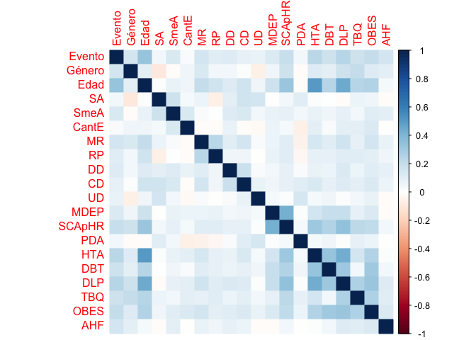

Introducción
Para el desarrollo de este reporte, se utilizó un dataset proporcionado por el servicio de Cardiología del Hospital Austral, con el propósito de analizar los datos de 1000 pacientes muestra que ingresaron a la guardia, y decidir así, si internar o no a un nuevo paciente. Se trata de un dataset con variables en su mayoría binarias, sin datos faltantes, que posee información tal como el género, la edad, presencia de problemas coronarios, cantidad de episodios previos, presencia de hipertensión y otras patologías que presenten alguna correlación.
Análisis de los datos
Eventos según género y edad

No se observan casos de pacientes con presencia de problemas coronarios antes de los 30 años. Las mujeres tienden a presentar problemas coronarios principalmente entre los 60 y 80 años mientras que los hombres entre los 50 y 75.
Eventos según el género

Se observa que aproximadamente un 80% de los pacientes con problemas coronarios son hombres.
Eventos según el tipo de dolor
Se analiza el porcentaje de pacientes con eventos que presentan dolor actualmente y las características de los mismos.
| Dolor | Porcentaje |
|---|---|
| Presenta | 82.64 |
| No presenta | 17.36 |

Observamos que el tipo de dolor del paciente se relaciona con la presencia de un evento cardíaco.Esto se debe a que quienes manifiestan tener un dolor opresivo tienen mayor frecuencia de eventos en comparación a pacientes con otro tipo de dolor.
Eventos en pacientes con dislipemia
Se analiza el porcentaje de pacientes con eventos que presenta dislipemia y la cantidad de episodios los mismos.
| Dislipemia | Porcentaje |
|---|---|
| Presenta | 57.85 |
| No presenta | 42.15 |

Al comparar los grupos en términos de dislipemia podemos observar que el grupo que padece la enfermedad, en su mayoría, tuvo más de un episodio. Mientras que para aquellos que no la padecen, aproximadamente la mitad tuvo un único episodio y la otra mitad más de uno.
Incidencia de variables para casos de Hipertensión
Siendo la hipertensión el síntoma más comun presente entre aquellos pacientes con eventos, se decició lograr un gráfico que permita observar que otras variables del dataset estan relacionadas en mayor medida con ella.

Podemos observar que la variable modificación posicion de respiración afecta en mayor medida a las mujeres con hipertensión que a los hombres que tambien la padecen. A su vez, los niveles de lipidos impactan en mayor medida a los hombres hipertensos, y con respecto a los antecedentes familiares, si bien no presentan tanta correlación con esta patología, se dan en igual proporción para ambos sexos.
Síndrome coronario agudo previo o historia de revascularización en pacientes con eventos

Se observa que aproximadamente un 60% de los pacientes mayores de 65 con eventos coronarios presentan un síndrome coronario agudo previo o historia de revascularización, a diferencia de aquellos pacientes con eventos menores a 65 donde este porcentaje se aproxima al 23%.
Predictor
Selección de variables
Correlación de los datos
El siguiente gráfico muestra la correlación entre las variables del dataset.Se pueden distinguir zonas más oscuras que representan mayor correlación entre las variables.

Segunda preseleccion
A su vez utilizamos otro método que selecciona las variables que tienen mayor repercusión a la hora de tener un evento. Este metodo genera una tabla con una lista de variables ordenadas segun el valor de dispersion (desvío) propio de cada una. Decidimos elegir aquellas de menor desvio para formar parte de la preselección.
Selección final
Teniendo en cuenta los métodos previos y el análisis realizado anteriormente decidimos tener en cuenta las siguientes variables a la hora de realizar la predicción:
- Edad
- Género
- Hipertensión
- Dislipemia
- SCA previo o historia de revascularización
- Mismo dolor evento previo
- Diabético
- Fumador
- Obesidad
- Presenta dolor actual
- Modifica respiración pocisión
- Características del dolor
Modelo de predicción
Se utilizó un modelo de regresión logística para predecir si un paciente va presentar o no problemas coronarios. Se separaron los datos del dataset de tal manera que 70% se utilizaron para generar el modelo de predicción mientras que el restante para probar la calidad del mismo.
Calidad del modelo
Para evaluar la calidad del modelo se utilizó la curva AUROC. Ella nos proporcionó este resultado:

Mails: